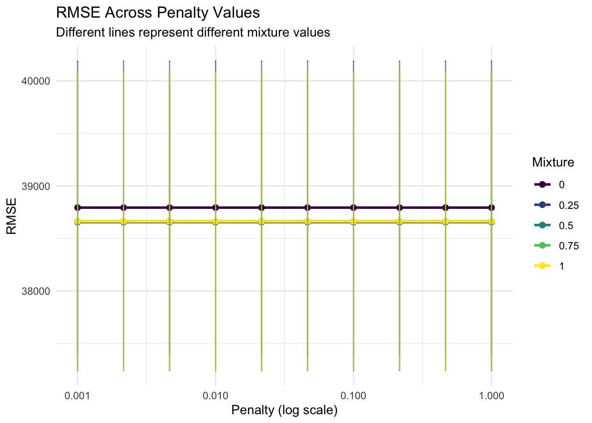
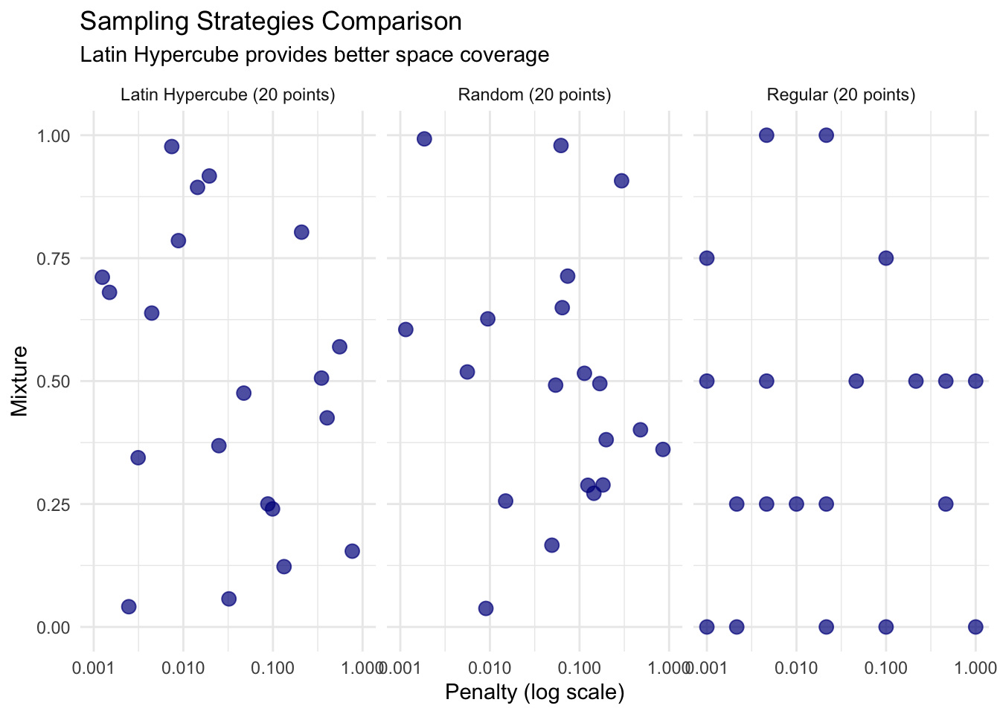
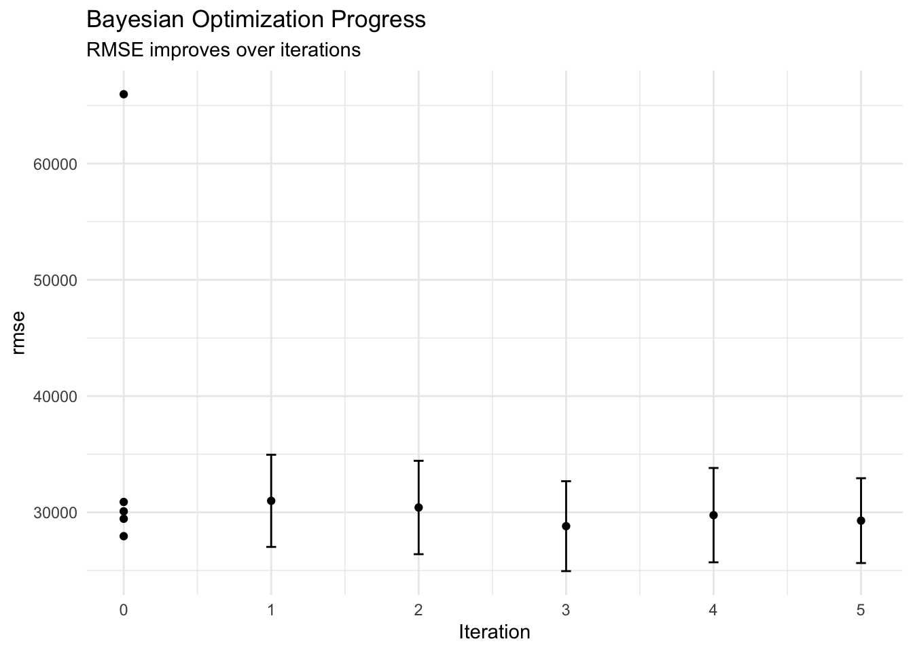
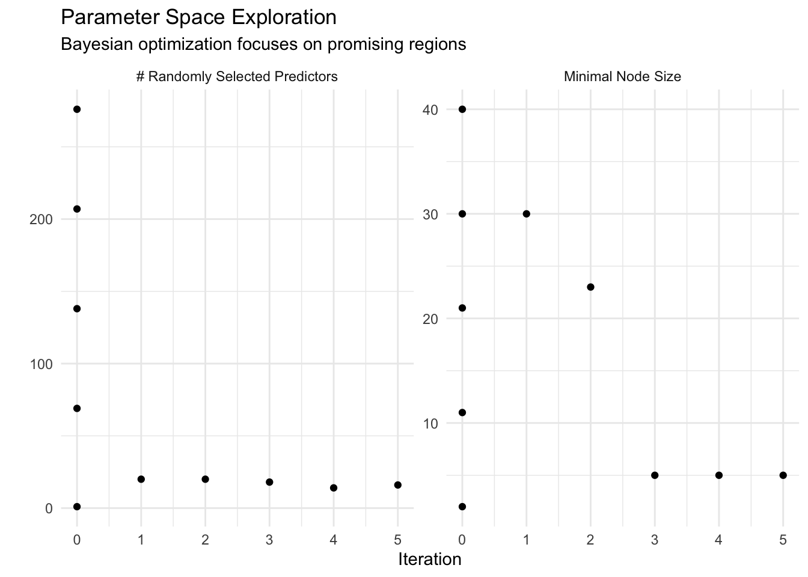
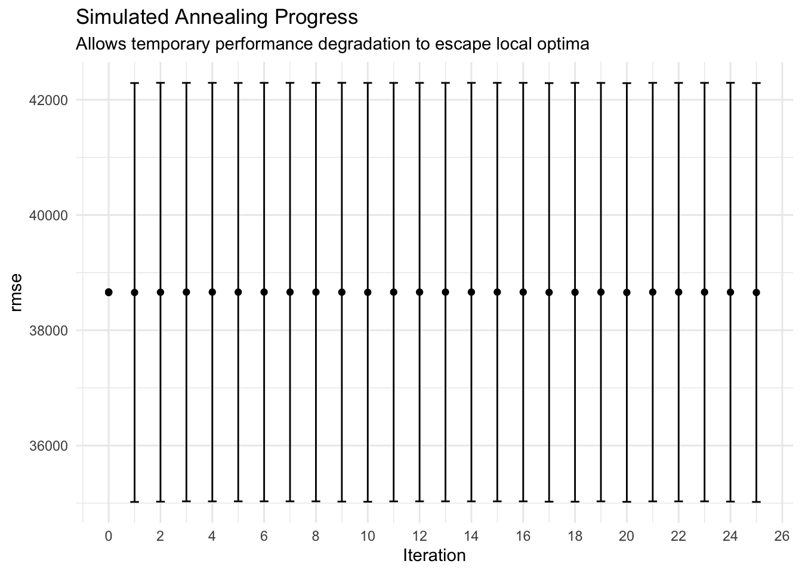
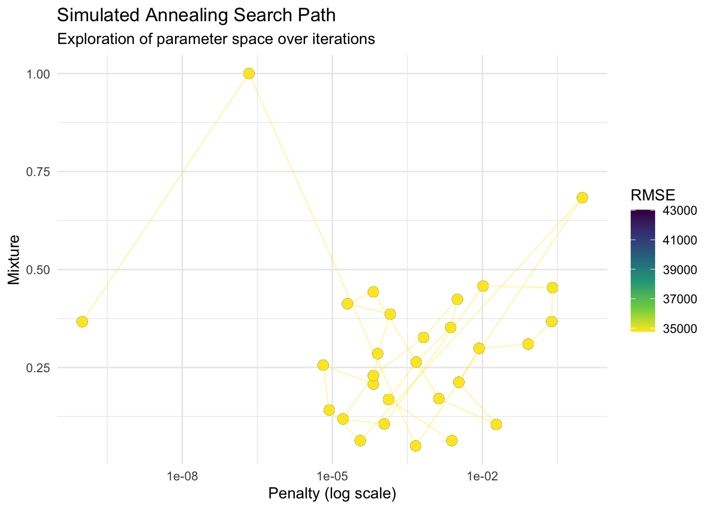
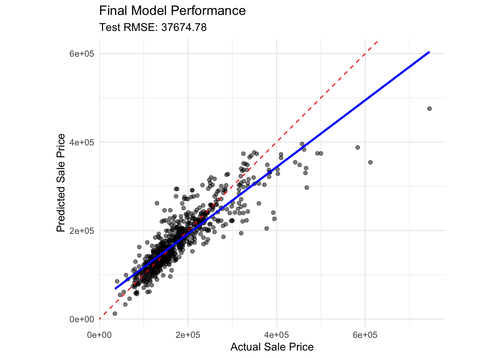
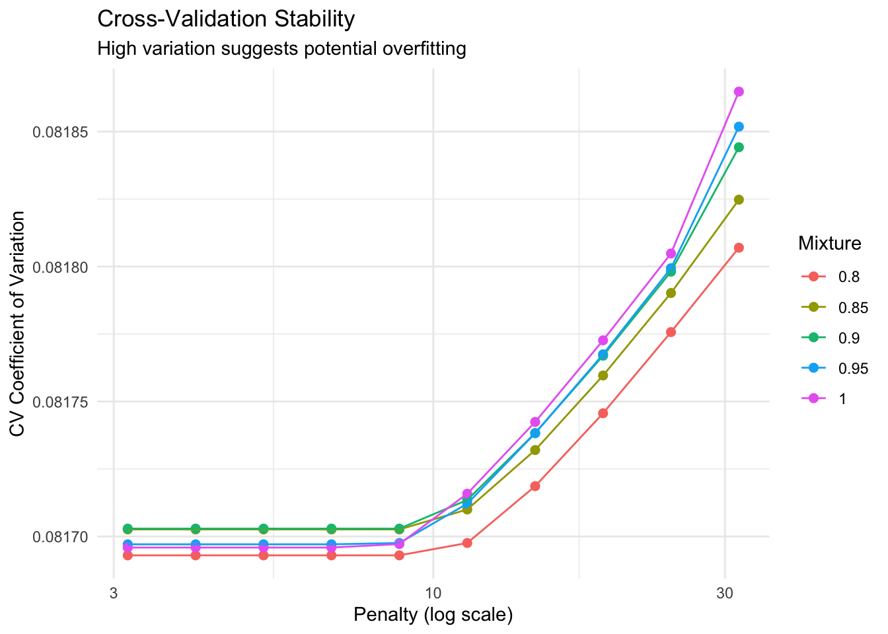

Chapter 13: Hyperparameter Tuning - Finding the Sweet Spot
Author
David Sarrat González, Juan R González
Published
September 29, 2025
Learning Objectives
By the end of this chapter, you will master:
Understanding hyperparameters vs parameters
Grid search and its variations
Random search strategies
Bayesian optimization with Gaussian processes
Racing methods for efficiency
Simulated annealing
Nested resampling for unbiased evaluation
Parallel processing for faster tuning
Best practices and common pitfalls
The Art and Science of Hyperparameter Tuning
Imagine you’re a chef perfecting a recipe. The ingredients are your features, the cooking method is your algorithm, but what about the temperature, timing, and seasoning amounts? These are like hyperparameters - they control the learning process but aren’t learned from the data directly.
Getting hyperparameters right can mean the difference between a model that barely works and one that achieves state-of-the-art performance. Too conservative, and you underfit. Too aggressive, and you overfit. The sweet spot lies somewhere in between.
v broom 1.0.10 v recipes 1.3.1
v dials 1.4.2 v rsample 1.3.1
v dplyr 1.1.4 v tailor 0.1.0
v ggplot2 4.0.0 v tidyr 1.3.1
v infer 1.0.9 v tune 2.0.0
v modeldata 1.5.1 v workflows 1.3.0
v parsnip 1.3.3 v workflowsets 1.1.1
v purrr 1.1.0 v yardstick 1.3.2
-- Conflicts ----------------------------------------- tidymodels_conflicts() --
x purrr::discard() masks scales::discard()
x dplyr::filter() masks stats::filter()
x dplyr::lag() masks stats::lag()
x recipes::step() masks stats::step()
library(tidyverse)
-- Attaching core tidyverse packages ------------------------ tidyverse 2.0.0 --
v forcats 1.0.0 v stringr 1.5.2
v lubridate 1.9.4 v tibble 3.3.0
v readr 2.1.5
-- Conflicts ------------------------------------------ tidyverse_conflicts() --
x readr::col_factor() masks scales::col_factor()
x purrr::discard() masks scales::discard()
x dplyr::filter() masks stats::filter()
x stringr::fixed() masks recipes::fixed()
x dplyr::lag() masks stats::lag()
x readr::spec() masks yardstick::spec()
i Use the conflicted package (<http://conflicted.r-lib.org/>) to force all conflicts to become errors
library(modeldata)library(vip)
Adjuntando el paquete: 'vip'
The following object is masked from 'package:utils':
vi
library(patchwork)library(doParallel)
Cargando paquete requerido: foreach
Adjuntando el paquete: 'foreach'
The following objects are masked from 'package:purrr':
accumulate, when
Cargando paquete requerido: iterators
Cargando paquete requerido: parallel
library(finetune)library(dials)# Set theme and seedtheme_set(theme_minimal())set.seed(123)# Load and prepare datadata(ames)ames_split <-initial_split(ames, prop =0.75, strata = Sale_Price)ames_train <-training(ames_split)ames_test <-testing(ames_split)# Create resamples for tuningames_folds <-vfold_cv(ames_train, v =5, strata = Sale_Price)
Understanding Hyperparameters
First, let’s clarify the distinction:
Parameters: Learned from data (e.g., regression coefficients, neural network weights)
Hyperparameters: Set before training (e.g., learning rate, tree depth, penalty)
# Example: Linear regression with regularization# Parameters: The coefficient values (beta_0, beta_1, ..., beta_p)# Hyperparameters: penalty (lambda) and mixture (alpha)# Without tuning - we guess the hyperparametersfixed_spec <-linear_reg(penalty =0.01, # Hyperparameter (guessed)mixture =0.5# Hyperparameter (guessed)) %>%set_engine("glmnet")# With tuning - we mark them for optimizationtunable_spec <-linear_reg(penalty =tune(), # To be optimizedmixture =tune() # To be optimized) %>%set_engine("glmnet")# The model will learn the coefficients (parameters) during fitting# But we need to find the best penalty and mixture (hyperparameters) through tuning
Different models have different hyperparameters:
# Decision tree hyperparameterstree_spec <-decision_tree(cost_complexity =tune(), # Pruning parametertree_depth =tune(), # Maximum depthmin_n =tune() # Minimum observations in node) %>%set_engine("rpart") %>%set_mode("regression")# Random forest hyperparametersrf_spec <-rand_forest(mtry =tune(), # Variables per splittrees =tune(), # Number of treesmin_n =tune() # Minimum node size) %>%set_engine("ranger") %>%set_mode("regression")# XGBoost has many hyperparametersxgb_spec <-boost_tree(trees =tune(),tree_depth =tune(),min_n =tune(),loss_reduction =tune(),sample_size =tune(),mtry =tune(),learn_rate =tune()) %>%set_engine("xgboost") %>%set_mode("regression")# Each model type has its own set of tunable parameters
Grid Search: The Systematic Approach
Grid search evaluates all combinations of hyperparameter values in a predefined grid:
# Create a simple preprocessing recipesimple_recipe <-recipe(Sale_Price ~ Gr_Liv_Area + Overall_Cond + Year_Built + Neighborhood, data = ames_train) %>%step_dummy(all_nominal_predictors()) %>%step_normalize(all_numeric_predictors())# Create a tunable elastic net modelelastic_spec <-linear_reg(penalty =tune(),mixture =tune()) %>%set_engine("glmnet")# Combine into workflowelastic_workflow <-workflow() %>%add_recipe(simple_recipe) %>%add_model(elastic_spec)# Define the gridelastic_grid <-grid_regular(penalty(range =c(-3, 0), trans =log10_trans()), # 10^-3 to 10^0mixture(range =c(0, 1)), # 0 (ridge) to 1 (lasso)levels =c(10, 5) # 10 penalty values, 5 mixture values = 50 combinations)print(elastic_grid)
# Tuning results
# 5-fold cross-validation using stratification
# A tibble: 5 x 5
splits id .metrics .notes .predictions
<list> <chr> <list> <list> <list>
1 <split [1756/441]> Fold1 <tibble [100 x 6]> <tibble [1 x 4]> <tibble>
2 <split [1757/440]> Fold2 <tibble [100 x 6]> <tibble [1 x 4]> <tibble>
3 <split [1757/440]> Fold3 <tibble [100 x 6]> <tibble [1 x 4]> <tibble>
4 <split [1758/439]> Fold4 <tibble [100 x 6]> <tibble [1 x 4]> <tibble>
5 <split [1760/437]> Fold5 <tibble [100 x 6]> <tibble [1 x 4]> <tibble>
There were issues with some computations:
- Warning(s) x4: ! The following columns have zero variance so scaling cannot be ...
- Warning(s) x1: ! The following columns have zero variance so scaling cannot be ...
Run `show_notes(.Last.tune.result)` for more information.
# Best parametersbest_grid <- grid_results %>%select_best(metric ="rmse")print(best_grid)
# A tibble: 1 x 3
penalty mixture .config
<dbl> <dbl> <chr>
1 0.001 0.25 pre0_mod02_post0
# More detailed visualizationgrid_results %>%collect_metrics() %>%filter(.metric =="rmse") %>%ggplot(aes(x = penalty, y = mean, color =factor(mixture))) +geom_line(linewidth =1) +geom_point(size =2) +geom_errorbar(aes(ymin = mean - std_err, ymax = mean + std_err), width =0.01, alpha =0.5) +scale_x_log10() +scale_color_viridis_d(name ="Mixture") +labs(title ="RMSE Across Penalty Values",subtitle ="Different lines represent different mixture values",x ="Penalty (log scale)",y ="RMSE" )

Grid search characteristics: - Pros: Systematic, reproducible, finds global optimum within grid - Cons: Computationally expensive, curse of dimensionality, may miss optimum between grid points
Random Search: The Efficient Explorer
Random search samples hyperparameter combinations randomly, often finding good solutions faster than grid search:
# Random grid - same parameter space, random samplingrandom_grid <-grid_random(penalty(range =c(-3, 0), trans =log10_trans()),mixture(range =c(0, 1)),size =30# Only 30 random combinations instead of 50 in regular grid)# Visualize random vs regular gridgrid_comparison <-bind_rows( elastic_grid %>%mutate(type ="Regular Grid (50 points)"), random_grid %>%mutate(type ="Random Grid (30 points)"))ggplot(grid_comparison, aes(x = penalty, y = mixture, color = type)) +geom_point(size =2, alpha =0.7) +scale_x_log10() +facet_wrap(~type) +labs(title ="Grid Search vs Random Search",subtitle ="Random search covers the space more efficiently",x ="Penalty (log scale)",y ="Mixture" ) +theme(legend.position ="none")
The mathematics behind why random search works: - For important hyperparameters, random search explores more unique values - Less affected by unimportant hyperparameters - Better coverage of continuous spaces
Latin Hypercube Sampling
Latin Hypercube provides space-filling designs that are more uniform than random:
# Latin hypercube gridlhs_grid <-grid_latin_hypercube(penalty(range =c(-3, 0), trans =log10_trans()),mixture(range =c(0, 1)),size =20# Even fewer points)# Visualize all three approachesall_grids <-bind_rows( elastic_grid %>%slice_sample(n =20) %>%mutate(type ="Regular (20 points)"), random_grid %>%slice_sample(n =20) %>%mutate(type ="Random (20 points)"), lhs_grid %>%mutate(type ="Latin Hypercube (20 points)"))ggplot(all_grids, aes(x = penalty, y = mixture)) +geom_point(size =3, color ="darkblue", alpha =0.7) +scale_x_log10() +facet_wrap(~type) +labs(title ="Sampling Strategies Comparison",subtitle ="Latin Hypercube provides better space coverage",x ="Penalty (log scale)",y ="Mixture" )

Bayesian Optimization: The Smart Search
Bayesian optimization uses past results to intelligently choose the next points to evaluate:
# More complex model for Bayesian optimization demonstrationrf_recipe <-recipe(Sale_Price ~ ., data = ames_train) %>%step_impute_median(all_numeric_predictors()) %>%step_normalize(all_numeric_predictors()) %>%step_dummy(all_nominal_predictors())rf_spec <-rand_forest(mtry =tune(),min_n =tune(),trees =500# Fix trees to reduce tuning time) %>%set_engine("ranger") %>%set_mode("regression")rf_workflow <-workflow() %>%add_recipe(rf_recipe) %>%add_model(rf_spec)# Set up parameter boundsrf_params <- rf_workflow %>%extract_parameter_set_dials() %>%update(mtry =mtry(c(5, 20)), # Number of variables per splitmin_n =min_n(c(5, 30)) # Minimum node size )# Initial random search to seed Bayesian optimizationset.seed(456)initial_results <- rf_workflow %>%tune_grid(resamples = ames_folds,grid =5, # Start with 5 random pointsmetrics = yardstick::metric_set(yardstick::rmse),control =control_grid(verbose =FALSE) )# Bayesian optimizationbayes_results <- rf_workflow %>%tune_bayes(resamples = ames_folds,initial = initial_results, # Use initial resultsiter =10, # 10 more iterationsmetrics = yardstick::metric_set(yardstick::rmse),param_info = rf_params,control =control_bayes(verbose =FALSE,no_improve =5, # Stop after 5 iterations without improvementuncertain =5# Exploration vs exploitation trade-off ) )# Visualize the optimization pathautoplot(bayes_results, type ="performance") +labs(title ="Bayesian Optimization Progress",subtitle ="RMSE improves over iterations" )

# Show acquisition function behaviorautoplot(bayes_results, type ="parameters") +labs(title ="Parameter Space Exploration",subtitle ="Bayesian optimization focuses on promising regions" )

How Bayesian optimization works: 1. Surrogate model: Gaussian process models the objective function 2. Acquisition function: Balances exploration vs exploitation 3. Sequential design: Each point is chosen based on all previous results 4. Efficiency: Often finds good solutions with fewer evaluations
Racing Methods: Survival of the Fittest
Racing methods eliminate poor performers early, focusing resources on promising candidates:
# Create a larger initial gridrace_grid <-grid_latin_hypercube(penalty(range =c(-4, 0), trans =log10_trans()),mixture(range =c(0, 1)),size =50# Start with many candidates)# Racing with ANOVA (finetune package)race_results <- elastic_workflow %>%tune_race_anova(resamples = ames_folds,grid = race_grid,metrics = yardstick::metric_set(yardstick::rmse),control =control_race(verbose_elim =TRUE, # Show elimination progressburn_in =3, # Evaluate all on first 3 foldsnum_ties =5, # Number of ties to breakalpha =0.05# Significance level for elimination ) )# Visualize racing progressplot_race(race_results) +labs(title ="Racing Method: Progressive Elimination",subtitle ="Poor performers are eliminated early" )
Racing advantages: - Dramatically reduces computation time - Focuses on promising candidates - Statistical rigor in elimination decisions
Simulated Annealing: The Flexible Explorer
Simulated annealing allows “bad” moves early on to escape local optima:
# Simulated annealing for hyperparameter optimizationsa_results <- elastic_workflow %>%tune_sim_anneal(resamples = ames_folds,metrics = yardstick::metric_set(yardstick::rmse),initial =4, # Start with 4 random pointsiter =25, # 25 iterationscontrol =control_sim_anneal(verbose =FALSE,cooling_coef =0.02, # How fast temperature decreasesradius =c(0.05, 0.15) # Search radius ) )# Visualize annealing pathautoplot(sa_results, type ="performance") +labs(title ="Simulated Annealing Progress",subtitle ="Allows temporary performance degradation to escape local optima" )

# Show parameter explorationsa_results %>%collect_metrics(summarize =FALSE) %>%ggplot(aes(x = penalty, y = mixture, color = .estimate)) +geom_point(size =3) +geom_path(alpha =0.3) +scale_x_log10() +scale_color_viridis_c(name ="RMSE", direction =-1) +labs(title ="Simulated Annealing Search Path",subtitle ="Exploration of parameter space over iterations",x ="Penalty (log scale)",y ="Mixture" )

Nested Resampling for Unbiased Evaluation
When tuning hyperparameters, we need nested resampling to get unbiased performance estimates:
# Outer resampling for performance estimationouter_folds <-vfold_cv(ames_train, v =3) # Reduced for computation time# Function to tune and evaluate on one outer foldtune_and_evaluate <-function(split) {# Training data for this outer fold train_data <-analysis(split)# Test data for this outer fold test_data <-assessment(split)# Inner resampling for tuning inner_folds <-vfold_cv(train_data, v =5)# Create workflow with data from this fold fold_recipe <-recipe(Sale_Price ~ Gr_Liv_Area + Overall_Cond + Year_Built, data = train_data) %>%step_normalize(all_numeric_predictors()) fold_workflow <-workflow() %>%add_recipe(fold_recipe) %>%add_model(elastic_spec)# Tune on inner folds tune_results <- fold_workflow %>%tune_grid(resamples = inner_folds,grid =10,metrics = yardstick::metric_set(yardstick::rmse) )# Select best parameters best_params <-select_best(tune_results, metric ="rmse")# Finalize workflow final_workflow <- fold_workflow %>%finalize_workflow(best_params)# Fit on full training data for this fold final_fit <- final_workflow %>%fit(train_data)# Evaluate on test data for this fold test_pred <-predict(final_fit, test_data) %>%bind_cols(test_data %>%select(Sale_Price))# Return metrics test_pred %>%metrics(Sale_Price, .pred) %>%mutate(penalty = best_params$penalty,mixture = best_params$mixture )}# Apply to all outer folds (this takes time!)# nested_results <- map_df(outer_folds$splits, tune_and_evaluate, .id = "fold")# For demonstration, show the conceptcat("Nested Resampling Structure:Outer Fold 1: - Inner CV: Tune hyperparameters - Select best hyperparameters - Train final model - Evaluate on outer test setOuter Fold 2: - (Repeat process independently)Outer Fold 3: - (Repeat process independently)Final estimate: Average of outer fold performancesThis gives unbiased estimate of generalization performance")
Nested Resampling Structure:
Outer Fold 1:
- Inner CV: Tune hyperparameters
- Select best hyperparameters
- Train final model
- Evaluate on outer test set
Outer Fold 2:
- (Repeat process independently)
Outer Fold 3:
- (Repeat process independently)
Final estimate: Average of outer fold performances
This gives unbiased estimate of generalization performance
Parallel Processing for Speed
Tuning can be computationally intensive. Parallel processing helps:
cat("With sequential processing, this would take approximately", round(parallel_time * cores, 2), units(parallel_time), "\n")
With sequential processing, this would take approximately 18.83 secs
Parallelization strategies: - Over resamples: Each fold processed on different core - Over models: Each hyperparameter combination on different core - Hybrid: Both, depending on problem size
== Workflow ====================================================================
Preprocessor: Recipe
Model: linear_reg()
-- Preprocessor ----------------------------------------------------------------
2 Recipe Steps
* step_dummy()
* step_normalize()
-- Model -----------------------------------------------------------------------
Linear Regression Model Specification (regression)
Main Arguments:
penalty = 31.6227766016838
mixture = 1
Computational engine: glmnet
# Fit on all training datafinal_fit <- final_workflow %>%fit(ames_train)# Evaluate on test settest_pred <-predict(final_fit, ames_test) %>%bind_cols(ames_test %>%select(Sale_Price))test_metrics <- test_pred %>%metrics(Sale_Price, .pred)knitr::kable(test_metrics, digits =4)
.metric
.estimator
.estimate
rmse
standard
37674.7825
rsq
standard
0.7856
mae
standard
24116.8959
# Visualize final model performanceggplot(test_pred, aes(x = Sale_Price, y = .pred)) +geom_point(alpha =0.5) +geom_abline(slope =1, intercept =0, color ="red", linetype ="dashed") +geom_smooth(method ="lm", se =FALSE, color ="blue") +labs(title ="Final Model Performance",subtitle =paste("Test RMSE:", round(test_metrics$.estimate[1], 2)),x ="Actual Sale Price",y ="Predicted Sale Price" ) +coord_equal()

Best Practices
1. Start Simple, Add Complexity
# Start with few hyperparameterssimple_tuning <-linear_reg(penalty =tune()) %>%set_engine("glmnet")# Then add more if neededcomplex_tuning <-linear_reg(penalty =tune(),mixture =tune()) %>%set_engine("glmnet")
2. Use Appropriate Search Strategies
tuning_guide <-tibble(Scenario =c("Few hyperparameters (≤3)","Many hyperparameters (>5)","Expensive models","Quick exploration","Final optimization","Limited budget" ),`Recommended Method`=c("Grid search","Random search or Bayesian","Bayesian optimization","Random search","Bayesian or fine grid","Racing methods" ),Reasoning =c("Can afford exhaustive search","Grid search becomes prohibitive","Minimize number of evaluations","Good coverage quickly","Find true optimum","Eliminate bad candidates early" ))knitr::kable(tuning_guide)
Scenario
Recommended Method
Reasoning
Few hyperparameters (<U+2264>3)
Grid search
Can afford exhaustive search
Many hyperparameters (>5)
Random search or Bayesian
Grid search becomes prohibitive
Expensive models
Bayesian optimization
Minimize number of evaluations
Quick exploration
Random search
Good coverage quickly
Final optimization
Bayesian or fine grid
Find true optimum
Limited budget
Racing methods
Eliminate bad candidates early
3. Monitor for Overfitting
# Check for overfitting during tuningtuning_diagnostics <- fine_results %>%collect_metrics(summarize =FALSE) %>%group_by(penalty, mixture) %>%summarise(mean_rmse =mean(.estimate),sd_rmse =sd(.estimate),cv_variation = sd_rmse / mean_rmse,.groups ="drop" )# High CV variation might indicate overfittingggplot(tuning_diagnostics, aes(x = penalty, y = cv_variation, color =factor(mixture))) +geom_point(size =2) +geom_line() +scale_x_log10() +labs(title ="Cross-Validation Stability",subtitle ="High variation suggests potential overfitting",x ="Penalty (log scale)",y ="CV Coefficient of Variation",color ="Mixture" )

Exercises
Exercise 1: Compare Search Strategies
Compare different search strategies on the same problem:
✅ Hyperparameter fundamentals - Difference from parameters - Impact on model performance - Model-specific hyperparameters
✅ Search strategies - Grid search for exhaustive exploration - Random search for efficiency - Latin hypercube for space-filling
✅ Advanced methods - Bayesian optimization for intelligent search - Racing for early stopping - Simulated annealing for flexibility
✅ Practical considerations - Nested resampling for unbiased evaluation - Parallel processing for speed - Multi-metric optimization
✅ Best practices - Choosing appropriate strategies - Monitoring for overfitting - Iterative refinement
Key takeaways: - No single best tuning method - choose based on context - Start coarse, refine gradually - Use parallel processing for speed - Always validate on held-out data - Consider computational budget - Balance exploration and exploitation
What’s Next?
In Chapter 16, we’ll explore ensemble methods that combine multiple models for superior performance.
---title: "Chapter 13: Hyperparameter Tuning - Finding the Sweet Spot"author: "David Sarrat González, Juan R González"date: todayformat: html: code-fold: false code-tools: true---## Learning ObjectivesBy the end of this chapter, you will master:- Understanding hyperparameters vs parameters- Grid search and its variations- Random search strategies- Bayesian optimization with Gaussian processes- Racing methods for efficiency- Simulated annealing- Nested resampling for unbiased evaluation- Parallel processing for faster tuning- Best practices and common pitfalls## The Art and Science of Hyperparameter TuningImagine you're a chef perfecting a recipe. The ingredients are your features, the cooking method is your algorithm, but what about the temperature, timing, and seasoning amounts? These are like hyperparameters - they control the learning process but aren't learned from the data directly.Getting hyperparameters right can mean the difference between a model that barely works and one that achieves state-of-the-art performance. Too conservative, and you underfit. Too aggressive, and you overfit. The sweet spot lies somewhere in between.```{r}#| message: truelibrary(tidymodels)library(tidyverse)library(modeldata)library(vip)library(patchwork)library(doParallel)library(finetune)library(dials)# Set theme and seedtheme_set(theme_minimal())set.seed(123)# Load and prepare datadata(ames)ames_split <-initial_split(ames, prop =0.75, strata = Sale_Price)ames_train <-training(ames_split)ames_test <-testing(ames_split)# Create resamples for tuningames_folds <-vfold_cv(ames_train, v =5, strata = Sale_Price)```## Understanding HyperparametersFirst, let's clarify the distinction:- **Parameters**: Learned from data (e.g., regression coefficients, neural network weights)- **Hyperparameters**: Set before training (e.g., learning rate, tree depth, penalty)```{r}# Example: Linear regression with regularization# Parameters: The coefficient values (beta_0, beta_1, ..., beta_p)# Hyperparameters: penalty (lambda) and mixture (alpha)# Without tuning - we guess the hyperparametersfixed_spec <-linear_reg(penalty =0.01, # Hyperparameter (guessed)mixture =0.5# Hyperparameter (guessed)) %>%set_engine("glmnet")# With tuning - we mark them for optimizationtunable_spec <-linear_reg(penalty =tune(), # To be optimizedmixture =tune() # To be optimized) %>%set_engine("glmnet")# The model will learn the coefficients (parameters) during fitting# But we need to find the best penalty and mixture (hyperparameters) through tuning```Different models have different hyperparameters:```{r}# Decision tree hyperparameterstree_spec <-decision_tree(cost_complexity =tune(), # Pruning parametertree_depth =tune(), # Maximum depthmin_n =tune() # Minimum observations in node) %>%set_engine("rpart") %>%set_mode("regression")# Random forest hyperparametersrf_spec <-rand_forest(mtry =tune(), # Variables per splittrees =tune(), # Number of treesmin_n =tune() # Minimum node size) %>%set_engine("ranger") %>%set_mode("regression")# XGBoost has many hyperparametersxgb_spec <-boost_tree(trees =tune(),tree_depth =tune(),min_n =tune(),loss_reduction =tune(),sample_size =tune(),mtry =tune(),learn_rate =tune()) %>%set_engine("xgboost") %>%set_mode("regression")# Each model type has its own set of tunable parameters```## Grid Search: The Systematic ApproachGrid search evaluates all combinations of hyperparameter values in a predefined grid:```{r}# Create a simple preprocessing recipesimple_recipe <-recipe(Sale_Price ~ Gr_Liv_Area + Overall_Cond + Year_Built + Neighborhood, data = ames_train) %>%step_dummy(all_nominal_predictors()) %>%step_normalize(all_numeric_predictors())# Create a tunable elastic net modelelastic_spec <-linear_reg(penalty =tune(),mixture =tune()) %>%set_engine("glmnet")# Combine into workflowelastic_workflow <-workflow() %>%add_recipe(simple_recipe) %>%add_model(elastic_spec)# Define the gridelastic_grid <-grid_regular(penalty(range =c(-3, 0), trans =log10_trans()), # 10^-3 to 10^0mixture(range =c(0, 1)), # 0 (ridge) to 1 (lasso)levels =c(10, 5) # 10 penalty values, 5 mixture values = 50 combinations)print(elastic_grid)# Visualize the gridggplot(elastic_grid, aes(x = penalty, y = mixture)) +geom_point(size =3, color ="steelblue") +scale_x_log10() +labs(title ="Regular Grid for Elastic Net",subtitle ="50 combinations to evaluate",x ="Penalty (log scale)",y ="Mixture (0=Ridge, 1=Lasso)" )```### Performing Grid Search```{r}# Tune with grid searchgrid_results <- elastic_workflow %>%tune_grid(resamples = ames_folds,grid = elastic_grid,metrics = yardstick::metric_set(yardstick::rmse, yardstick::rsq),control =control_grid(save_pred =TRUE, verbose =FALSE) )# Examine resultsgrid_results# Best parametersbest_grid <- grid_results %>%select_best(metric ="rmse")print(best_grid)# Visualize tuning resultsautoplot(grid_results) +labs(title ="Grid Search Results")# More detailed visualizationgrid_results %>%collect_metrics() %>%filter(.metric =="rmse") %>%ggplot(aes(x = penalty, y = mean, color =factor(mixture))) +geom_line(linewidth =1) +geom_point(size =2) +geom_errorbar(aes(ymin = mean - std_err, ymax = mean + std_err), width =0.01, alpha =0.5) +scale_x_log10() +scale_color_viridis_d(name ="Mixture") +labs(title ="RMSE Across Penalty Values",subtitle ="Different lines represent different mixture values",x ="Penalty (log scale)",y ="RMSE" )```Grid search characteristics:- **Pros**: Systematic, reproducible, finds global optimum within grid- **Cons**: Computationally expensive, curse of dimensionality, may miss optimum between grid points## Random Search: The Efficient ExplorerRandom search samples hyperparameter combinations randomly, often finding good solutions faster than grid search:```{r}# Random grid - same parameter space, random samplingrandom_grid <-grid_random(penalty(range =c(-3, 0), trans =log10_trans()),mixture(range =c(0, 1)),size =30# Only 30 random combinations instead of 50 in regular grid)# Visualize random vs regular gridgrid_comparison <-bind_rows( elastic_grid %>%mutate(type ="Regular Grid (50 points)"), random_grid %>%mutate(type ="Random Grid (30 points)"))ggplot(grid_comparison, aes(x = penalty, y = mixture, color = type)) +geom_point(size =2, alpha =0.7) +scale_x_log10() +facet_wrap(~type) +labs(title ="Grid Search vs Random Search",subtitle ="Random search covers the space more efficiently",x ="Penalty (log scale)",y ="Mixture" ) +theme(legend.position ="none")# Perform random searchrandom_results <- elastic_workflow %>%tune_grid(resamples = ames_folds,grid = random_grid,metrics = yardstick::metric_set(yardstick::rmse, yardstick::rsq),control =control_grid(save_pred =FALSE, verbose =FALSE) )# Compare efficiencycomparison <-bind_rows( grid_results %>%show_best(metric ="rmse", n =1) %>%mutate(method ="Grid (50 points)"), random_results %>%show_best(metric ="rmse", n =1) %>%mutate(method ="Random (30 points)")) %>%select(method, penalty, mixture, mean, std_err)knitr::kable(comparison, digits =4)```The mathematics behind why random search works:- For important hyperparameters, random search explores more unique values- Less affected by unimportant hyperparameters- Better coverage of continuous spaces## Latin Hypercube SamplingLatin Hypercube provides space-filling designs that are more uniform than random:```{r}# Latin hypercube gridlhs_grid <-grid_latin_hypercube(penalty(range =c(-3, 0), trans =log10_trans()),mixture(range =c(0, 1)),size =20# Even fewer points)# Visualize all three approachesall_grids <-bind_rows( elastic_grid %>%slice_sample(n =20) %>%mutate(type ="Regular (20 points)"), random_grid %>%slice_sample(n =20) %>%mutate(type ="Random (20 points)"), lhs_grid %>%mutate(type ="Latin Hypercube (20 points)"))ggplot(all_grids, aes(x = penalty, y = mixture)) +geom_point(size =3, color ="darkblue", alpha =0.7) +scale_x_log10() +facet_wrap(~type) +labs(title ="Sampling Strategies Comparison",subtitle ="Latin Hypercube provides better space coverage",x ="Penalty (log scale)",y ="Mixture" )```## Bayesian Optimization: The Smart SearchBayesian optimization uses past results to intelligently choose the next points to evaluate:```{r}# More complex model for Bayesian optimization demonstrationrf_recipe <-recipe(Sale_Price ~ ., data = ames_train) %>%step_impute_median(all_numeric_predictors()) %>%step_normalize(all_numeric_predictors()) %>%step_dummy(all_nominal_predictors())rf_spec <-rand_forest(mtry =tune(),min_n =tune(),trees =500# Fix trees to reduce tuning time) %>%set_engine("ranger") %>%set_mode("regression")rf_workflow <-workflow() %>%add_recipe(rf_recipe) %>%add_model(rf_spec)# Set up parameter boundsrf_params <- rf_workflow %>%extract_parameter_set_dials() %>%update(mtry =mtry(c(5, 20)), # Number of variables per splitmin_n =min_n(c(5, 30)) # Minimum node size )# Initial random search to seed Bayesian optimizationset.seed(456)initial_results <- rf_workflow %>%tune_grid(resamples = ames_folds,grid =5, # Start with 5 random pointsmetrics = yardstick::metric_set(yardstick::rmse),control =control_grid(verbose =FALSE) )# Bayesian optimizationbayes_results <- rf_workflow %>%tune_bayes(resamples = ames_folds,initial = initial_results, # Use initial resultsiter =10, # 10 more iterationsmetrics = yardstick::metric_set(yardstick::rmse),param_info = rf_params,control =control_bayes(verbose =FALSE,no_improve =5, # Stop after 5 iterations without improvementuncertain =5# Exploration vs exploitation trade-off ) )# Visualize the optimization pathautoplot(bayes_results, type ="performance") +labs(title ="Bayesian Optimization Progress",subtitle ="RMSE improves over iterations" )# Show acquisition function behaviorautoplot(bayes_results, type ="parameters") +labs(title ="Parameter Space Exploration",subtitle ="Bayesian optimization focuses on promising regions" )```How Bayesian optimization works:1. **Surrogate model**: Gaussian process models the objective function2. **Acquisition function**: Balances exploration vs exploitation3. **Sequential design**: Each point is chosen based on all previous results4. **Efficiency**: Often finds good solutions with fewer evaluations## Racing Methods: Survival of the FittestRacing methods eliminate poor performers early, focusing resources on promising candidates:```{r}# Create a larger initial gridrace_grid <-grid_latin_hypercube(penalty(range =c(-4, 0), trans =log10_trans()),mixture(range =c(0, 1)),size =50# Start with many candidates)# Racing with ANOVA (finetune package)race_results <- elastic_workflow %>%tune_race_anova(resamples = ames_folds,grid = race_grid,metrics = yardstick::metric_set(yardstick::rmse),control =control_race(verbose_elim =TRUE, # Show elimination progressburn_in =3, # Evaluate all on first 3 foldsnum_ties =5, # Number of ties to breakalpha =0.05# Significance level for elimination ) )# Visualize racing progressplot_race(race_results) +labs(title ="Racing Method: Progressive Elimination",subtitle ="Poor performers are eliminated early" )# Compare efficiencyracing_summary <-tibble(Method =c("Full Grid (50×5 folds)", "Racing"),`Total Evaluations`=c(50*5, sum(!is.na(collect_metrics(race_results, summarize =FALSE)$.estimate))),`Best RMSE`=c(show_best(grid_results, metric ="rmse", n =1)$mean,show_best(race_results, metric ="rmse", n =1)$mean ))knitr::kable(racing_summary, digits =4)```Racing advantages:- Dramatically reduces computation time- Focuses on promising candidates- Statistical rigor in elimination decisions## Simulated Annealing: The Flexible ExplorerSimulated annealing allows "bad" moves early on to escape local optima:```{r}# Simulated annealing for hyperparameter optimizationsa_results <- elastic_workflow %>%tune_sim_anneal(resamples = ames_folds,metrics = yardstick::metric_set(yardstick::rmse),initial =4, # Start with 4 random pointsiter =25, # 25 iterationscontrol =control_sim_anneal(verbose =FALSE,cooling_coef =0.02, # How fast temperature decreasesradius =c(0.05, 0.15) # Search radius ) )# Visualize annealing pathautoplot(sa_results, type ="performance") +labs(title ="Simulated Annealing Progress",subtitle ="Allows temporary performance degradation to escape local optima" )# Show parameter explorationsa_results %>%collect_metrics(summarize =FALSE) %>%ggplot(aes(x = penalty, y = mixture, color = .estimate)) +geom_point(size =3) +geom_path(alpha =0.3) +scale_x_log10() +scale_color_viridis_c(name ="RMSE", direction =-1) +labs(title ="Simulated Annealing Search Path",subtitle ="Exploration of parameter space over iterations",x ="Penalty (log scale)",y ="Mixture" )```## Nested Resampling for Unbiased EvaluationWhen tuning hyperparameters, we need nested resampling to get unbiased performance estimates:```{r}# Outer resampling for performance estimationouter_folds <-vfold_cv(ames_train, v =3) # Reduced for computation time# Function to tune and evaluate on one outer foldtune_and_evaluate <-function(split) {# Training data for this outer fold train_data <-analysis(split)# Test data for this outer fold test_data <-assessment(split)# Inner resampling for tuning inner_folds <-vfold_cv(train_data, v =5)# Create workflow with data from this fold fold_recipe <-recipe(Sale_Price ~ Gr_Liv_Area + Overall_Cond + Year_Built, data = train_data) %>%step_normalize(all_numeric_predictors()) fold_workflow <-workflow() %>%add_recipe(fold_recipe) %>%add_model(elastic_spec)# Tune on inner folds tune_results <- fold_workflow %>%tune_grid(resamples = inner_folds,grid =10,metrics = yardstick::metric_set(yardstick::rmse) )# Select best parameters best_params <-select_best(tune_results, metric ="rmse")# Finalize workflow final_workflow <- fold_workflow %>%finalize_workflow(best_params)# Fit on full training data for this fold final_fit <- final_workflow %>%fit(train_data)# Evaluate on test data for this fold test_pred <-predict(final_fit, test_data) %>%bind_cols(test_data %>%select(Sale_Price))# Return metrics test_pred %>%metrics(Sale_Price, .pred) %>%mutate(penalty = best_params$penalty,mixture = best_params$mixture )}# Apply to all outer folds (this takes time!)# nested_results <- map_df(outer_folds$splits, tune_and_evaluate, .id = "fold")# For demonstration, show the conceptcat("Nested Resampling Structure:Outer Fold 1: - Inner CV: Tune hyperparameters - Select best hyperparameters - Train final model - Evaluate on outer test setOuter Fold 2: - (Repeat process independently)Outer Fold 3: - (Repeat process independently)Final estimate: Average of outer fold performancesThis gives unbiased estimate of generalization performance")```## Parallel Processing for SpeedTuning can be computationally intensive. Parallel processing helps:```{r}# Setup parallel backendcores <- parallel::detectCores() -1# Leave one core freecl <-makePSOCKcluster(cores)registerDoParallel(cl)# Check parallel backendcat("Parallel backend registered with", cores, "cores\n")# Time comparison (simplified example)tic <-Sys.time()small_grid <-grid_regular(penalty(range =c(-2, 0)),mixture(),levels =c(5, 3))# Parallel tuningparallel_results <- elastic_workflow %>%tune_grid(resamples = ames_folds,grid = small_grid,metrics = yardstick::metric_set(yardstick::rmse),control =control_grid(parallel_over ="resamples") # Parallelize over folds )parallel_time <-Sys.time() - tic# Clean upstopCluster(cl)registerDoSEQ() # Return to sequentialcat("Tuning completed in", round(parallel_time, 2), units(parallel_time), "\n")cat("With sequential processing, this would take approximately", round(parallel_time * cores, 2), units(parallel_time), "\n")```Parallelization strategies:- **Over resamples**: Each fold processed on different core- **Over models**: Each hyperparameter combination on different core- **Hybrid**: Both, depending on problem size## Advanced Tuning Strategies### Multi-Metric OptimizationSometimes we need to optimize multiple metrics:```{r}# Tune for multiple metricsmulti_metric_results <- elastic_workflow %>%tune_grid(resamples = ames_folds,grid =10,metrics = yardstick::metric_set(yardstick::rmse, yardstick::rsq, yardstick::mae, yardstick::mape) )# Different metrics might suggest different "best" parametersbest_rmse <-select_best(multi_metric_results, metric ="rmse")best_rsq <-select_best(multi_metric_results, metric ="rsq")best_mae <-select_best(multi_metric_results, metric ="mae")comparison <-bind_rows( best_rmse %>%mutate(optimized_for ="RMSE"), best_rsq %>%mutate(optimized_for ="R-squared"), best_mae %>%mutate(optimized_for ="MAE"))knitr::kable(comparison, digits =4)# Pareto frontier for multi-objective optimizationmulti_metric_results %>%collect_metrics() %>%filter(.metric %in%c("rmse", "rsq")) %>%select(penalty, mixture, .metric, mean) %>%pivot_wider(names_from = .metric, values_from = mean) %>%ggplot(aes(x = rmse, y = rsq)) +geom_point(size =3, color ="steelblue") +geom_point(data = . %>%filter(rmse ==min(rmse)), color ="red", size =5, shape =17) +geom_point(data = . %>%filter(rsq ==max(rsq)), color ="green", size =5, shape =17) +labs(title ="Multi-Metric Trade-offs",subtitle ="Red: Best RMSE, Green: Best R²",x ="RMSE (lower is better)",y ="R² (higher is better)" )```### Adaptive Tuning RangesAdjust parameter ranges based on initial results:```{r}# Initial coarse searchcoarse_grid <-grid_regular(penalty(range =c(-4, 1)),mixture(),levels =c(6, 3))coarse_results <- elastic_workflow %>%tune_grid(resamples = ames_folds,grid = coarse_grid,metrics = yardstick::metric_set(yardstick::rmse) )# Find promising regionbest_coarse <-select_best(coarse_results, metric ="rmse")# Refined search around best regionfine_grid <-grid_regular(penalty(range =c(log10(best_coarse$penalty) -0.5, log10(best_coarse$penalty) +0.5)),mixture(range =c(max(0, best_coarse$mixture -0.2), min(1, best_coarse$mixture +0.2))),levels =c(10, 5))fine_results <- elastic_workflow %>%tune_grid(resamples = ames_folds,grid = fine_grid,metrics = yardstick::metric_set(yardstick::rmse) )# Visualize coarse vs fine searchsearch_comparison <-bind_rows( coarse_results %>%collect_metrics() %>%mutate(search ="Coarse"), fine_results %>%collect_metrics() %>%mutate(search ="Fine"))ggplot(search_comparison, aes(x = penalty, y = mean, color = search)) +geom_point(size =2, alpha =0.7) +scale_x_log10() +facet_wrap(~mixture, labeller = label_both) +labs(title ="Adaptive Search Strategy",subtitle ="Fine search focuses on promising region",x ="Penalty (log scale)",y ="RMSE" )```## Finalizing and EvaluatingAfter tuning, finalize your workflow:```{r}# Select best overall parametersbest_params <-select_best(fine_results, metric ="rmse")# Finalize workflowfinal_workflow <- elastic_workflow %>%finalize_workflow(best_params)print(final_workflow)# Fit on all training datafinal_fit <- final_workflow %>%fit(ames_train)# Evaluate on test settest_pred <-predict(final_fit, ames_test) %>%bind_cols(ames_test %>%select(Sale_Price))test_metrics <- test_pred %>%metrics(Sale_Price, .pred)knitr::kable(test_metrics, digits =4)# Visualize final model performanceggplot(test_pred, aes(x = Sale_Price, y = .pred)) +geom_point(alpha =0.5) +geom_abline(slope =1, intercept =0, color ="red", linetype ="dashed") +geom_smooth(method ="lm", se =FALSE, color ="blue") +labs(title ="Final Model Performance",subtitle =paste("Test RMSE:", round(test_metrics$.estimate[1], 2)),x ="Actual Sale Price",y ="Predicted Sale Price" ) +coord_equal()```## Best Practices### 1. Start Simple, Add Complexity```{r}# Start with few hyperparameterssimple_tuning <-linear_reg(penalty =tune()) %>%set_engine("glmnet")# Then add more if neededcomplex_tuning <-linear_reg(penalty =tune(),mixture =tune()) %>%set_engine("glmnet")```### 2. Use Appropriate Search Strategies```{r}tuning_guide <-tibble(Scenario =c("Few hyperparameters (≤3)","Many hyperparameters (>5)","Expensive models","Quick exploration","Final optimization","Limited budget" ),`Recommended Method`=c("Grid search","Random search or Bayesian","Bayesian optimization","Random search","Bayesian or fine grid","Racing methods" ),Reasoning =c("Can afford exhaustive search","Grid search becomes prohibitive","Minimize number of evaluations","Good coverage quickly","Find true optimum","Eliminate bad candidates early" ))knitr::kable(tuning_guide)```### 3. Monitor for Overfitting```{r}# Check for overfitting during tuningtuning_diagnostics <- fine_results %>%collect_metrics(summarize =FALSE) %>%group_by(penalty, mixture) %>%summarise(mean_rmse =mean(.estimate),sd_rmse =sd(.estimate),cv_variation = sd_rmse / mean_rmse,.groups ="drop" )# High CV variation might indicate overfittingggplot(tuning_diagnostics, aes(x = penalty, y = cv_variation, color =factor(mixture))) +geom_point(size =2) +geom_line() +scale_x_log10() +labs(title ="Cross-Validation Stability",subtitle ="High variation suggests potential overfitting",x ="Penalty (log scale)",y ="CV Coefficient of Variation",color ="Mixture" )```## Exercises### Exercise 1: Compare Search StrategiesCompare different search strategies on the same problem:```{r}# Your solution# Define a tunable XGBoost modelxgb_spec <-boost_tree(trees =300,tree_depth =tune(),learn_rate =tune(),min_n =tune()) %>%set_engine("xgboost") %>%set_mode("regression")xgb_workflow <-workflow() %>%add_recipe(simple_recipe) %>%add_model(xgb_spec)# Compare strategies (using smaller grids for speed)# 1. Regular gridregular_time <-system.time({ regular_xgb <- xgb_workflow %>%tune_grid(resamples = ames_folds,grid =grid_regular(tree_depth(c(3, 10)),learn_rate(c(-3, -1)),min_n(c(5, 20)),levels =c(3, 3, 3) # 27 combinations ),metrics = yardstick::metric_set(yardstick::rmse) )})# 2. Random searchrandom_time <-system.time({ random_xgb <- xgb_workflow %>%tune_grid(resamples = ames_folds,grid =15, # 15 random combinationsmetrics = yardstick::metric_set(yardstick::rmse) )})# 3. Latin hypercubelhs_time <-system.time({ lhs_xgb <- xgb_workflow %>%tune_grid(resamples = ames_folds,grid =grid_latin_hypercube(tree_depth(c(3, 10)),learn_rate(c(-3, -1)),min_n(c(5, 20)),size =15 ),metrics = yardstick::metric_set(yardstick::rmse) )})# Compare resultsstrategy_comparison <-bind_rows(show_best(regular_xgb, metric ="rmse", n =1) %>%mutate(strategy ="Regular Grid", time = regular_time[3], points =27),show_best(random_xgb, metric ="rmse", n =1) %>%mutate(strategy ="Random", time = random_time[3], points =15),show_best(lhs_xgb, metric ="rmse", n =1) %>%mutate(strategy ="Latin Hypercube", time = lhs_time[3], points =15)) %>%select(strategy, points, time, mean, tree_depth, learn_rate, min_n)knitr::kable(strategy_comparison, digits =4)```### Exercise 2: Implement Custom TuningCreate a custom tuning strategy:```{r}# Your solution# Implement iterative refinement strategyiterative_tuning <-function(workflow, resamples, n_iterations =3) { results <-list()# Start with coarse grid current_range_tree <-c(3, 15) current_range_rate <-c(-3, -0.5)for (i in1:n_iterations) {# Create grid for this iteration current_grid <-grid_regular(tree_depth(current_range_tree),learn_rate(current_range_rate, trans =log10_trans()),levels =c(5, 5) )# Tune iter_results <- workflow %>%tune_grid(resamples = resamples,grid = current_grid,metrics = yardstick::metric_set(yardstick::rmse) ) results[[i]] <- iter_results# Get best parameters best <-select_best(iter_results, metric ="rmse")# Refine ranges for next iteration (zoom in by 50%) tree_width <-diff(current_range_tree) *0.25 rate_width <-diff(current_range_rate) *0.25 current_range_tree <-c(max(3, best$tree_depth - tree_width),min(15, best$tree_depth + tree_width) ) current_range_rate <-c(max(-3, log10(best$learn_rate) - rate_width),min(-0.5, log10(best$learn_rate) + rate_width) )cat("Iteration", i, "- Best RMSE:", best$mean, "\n") }return(results)}# Apply custom strategy (simplified for demonstration)simple_xgb_workflow <-workflow() %>%add_recipe(recipe(Sale_Price ~ Gr_Liv_Area + Overall_Cond, data = ames_train)) %>%add_model(boost_tree(trees =100, tree_depth =tune(), learn_rate =tune()) %>%set_engine("xgboost") %>%set_mode("regression") )# custom_results <- iterative_tuning(simple_xgb_workflow, ames_folds, n_iterations = 2)```### Exercise 3: Multi-Objective OptimizationBalance multiple objectives:```{r}# Your solution# Tune for both performance and model complexitycomplexity_workflow <-workflow() %>%add_recipe(simple_recipe) %>%add_model(rand_forest(mtry =tune(), min_n =tune(), trees =tune()) %>%set_engine("ranger") %>%set_mode("regression") )# Create gridcomplexity_grid <-grid_latin_hypercube(mtry(c(2, 10)),min_n(c(5, 40)),trees(c(100, 1000)),size =30)# Tunecomplexity_results <- complexity_workflow %>%tune_grid(resamples = ames_folds,grid = complexity_grid,metrics = yardstick::metric_set(yardstick::rmse, yardstick::rsq) )# Add complexity metric (total trees × average tree size estimate)complexity_metrics <- complexity_results %>%collect_metrics() %>%filter(.metric =="rmse") %>%mutate(complexity = trees * (1/ min_n) * mtry, # Rough complexity measureperformance =-mean, # Negative RMSE (higher is better)# Pareto optimal if no other point has both better performance AND lower complexitypareto =TRUE# Simplified - would need proper calculation )# Visualize trade-offggplot(complexity_metrics, aes(x = complexity, y = performance)) +geom_point(aes(color = trees), size =3) +scale_color_viridis_c() +labs(title ="Performance vs Complexity Trade-off",subtitle ="Balancing model accuracy and computational cost",x ="Model Complexity (arbitrary units)",y ="Performance (-RMSE)" )# Select based on custom criterionbest_balanced <- complexity_metrics %>%mutate(score = performance -0.0001* complexity # Custom weighting ) %>%arrange(desc(score)) %>%slice(1)cat("Best balanced model:\n")cat("Trees:", best_balanced$trees, "\n")cat("mtry:", best_balanced$mtry, "\n")cat("min_n:", best_balanced$min_n, "\n")cat("RMSE:", -best_balanced$performance, "\n")```## SummaryIn this comprehensive chapter, you've mastered:✅ **Hyperparameter fundamentals** - Difference from parameters - Impact on model performance - Model-specific hyperparameters✅ **Search strategies** - Grid search for exhaustive exploration - Random search for efficiency - Latin hypercube for space-filling✅ **Advanced methods** - Bayesian optimization for intelligent search - Racing for early stopping - Simulated annealing for flexibility✅ **Practical considerations** - Nested resampling for unbiased evaluation - Parallel processing for speed - Multi-metric optimization✅ **Best practices** - Choosing appropriate strategies - Monitoring for overfitting - Iterative refinementKey takeaways:- No single best tuning method - choose based on context- Start coarse, refine gradually- Use parallel processing for speed- Always validate on held-out data- Consider computational budget- Balance exploration and exploitation## What's Next?In [Chapter 16](16-ensemble-methods.Rmd), we'll explore ensemble methods that combine multiple models for superior performance.## Additional Resources- [tune Documentation](https://tune.tidymodels.org/)- [finetune Documentation](https://finetune.tidymodels.org/)- [dials Documentation](https://dials.tidymodels.org/)- [Hyperparameter Optimization Review](https://arxiv.org/abs/1502.02127)- [Practical Bayesian Optimization](https://arxiv.org/abs/1206.2944)